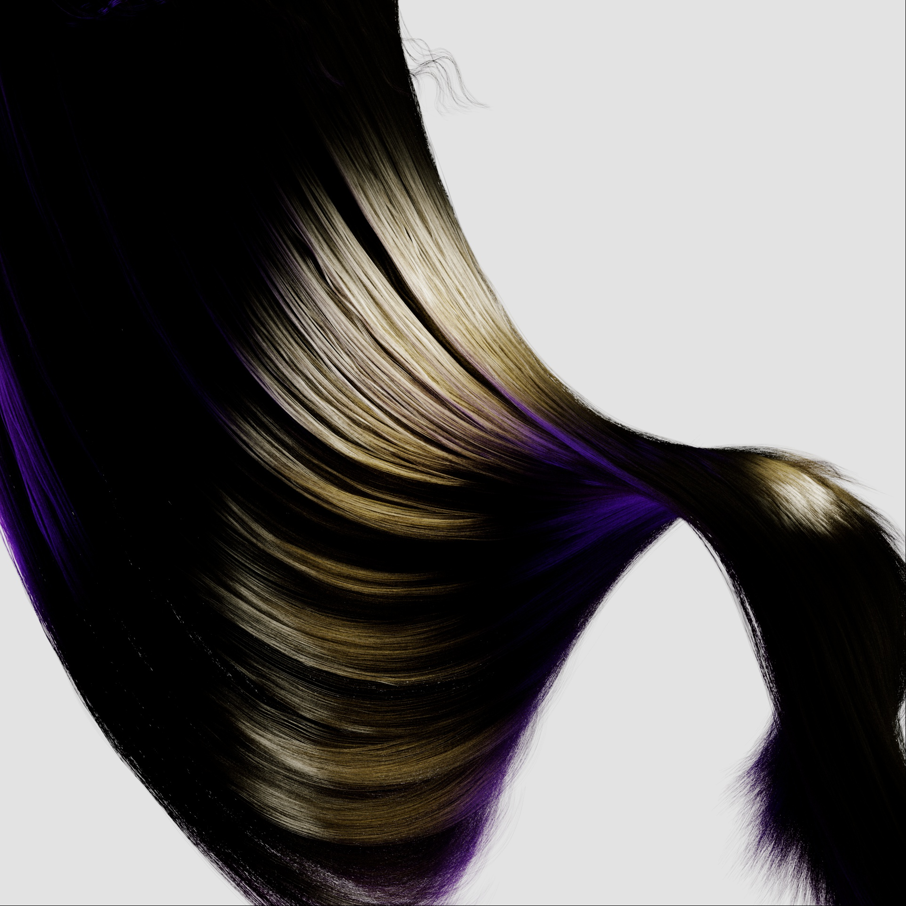
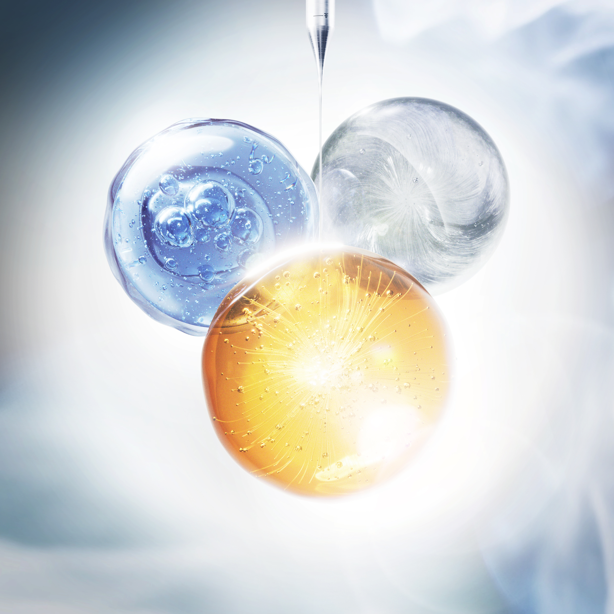
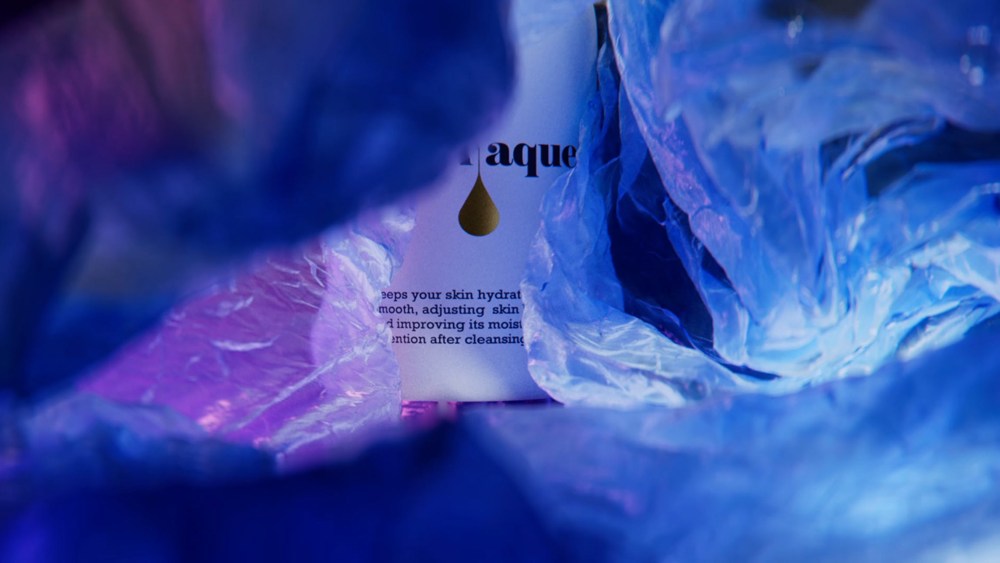

R&D
No brief.
No client.
Personal work with no brief and no client — materials pushed past the point of realism, forms with no commercial purpose, renders made to sharpen the eye.
This is where techniques get stress-tested before they reach client work: fabric simulation, glass caustics, hair dynamics, a watch study inspired by the Hublot Big Bang, a Nike Air Max TN study, eyewear optics. Some studies fail in useful ways. Some are worth keeping.






